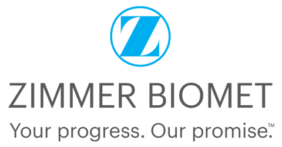
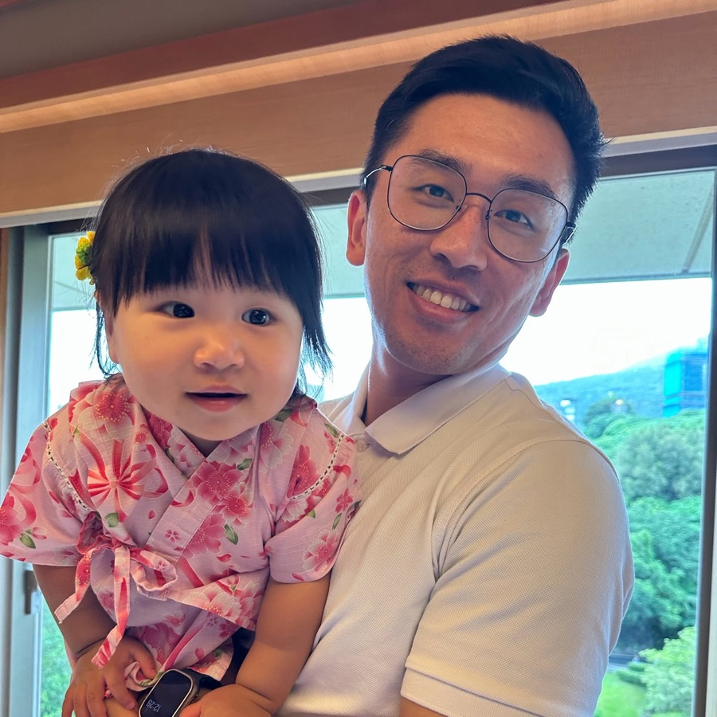
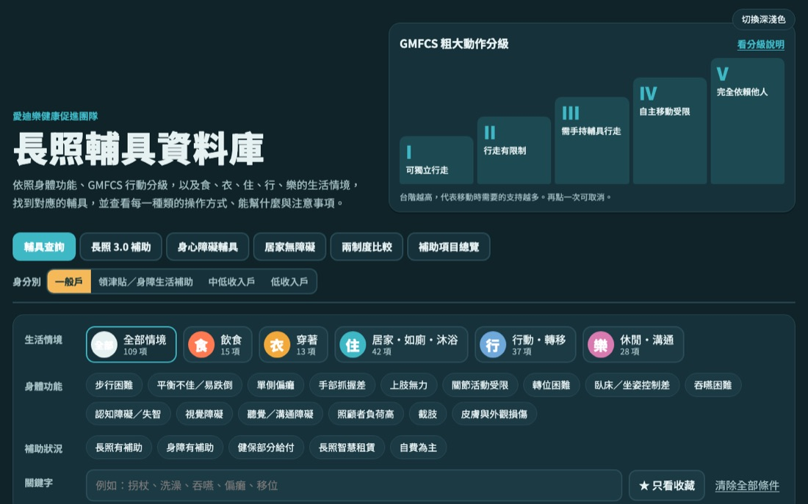
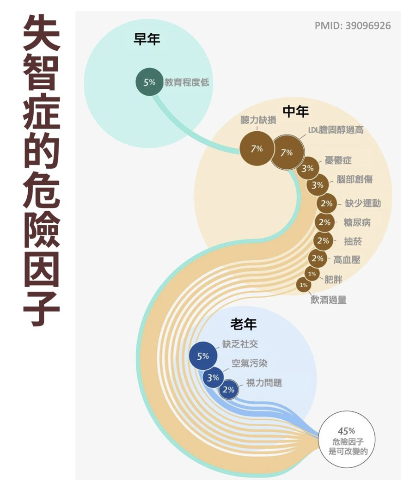
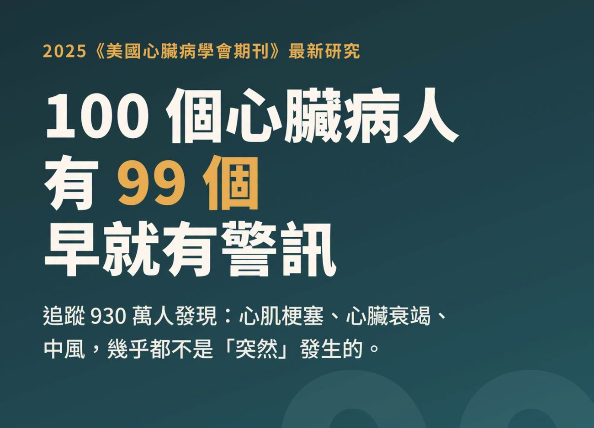
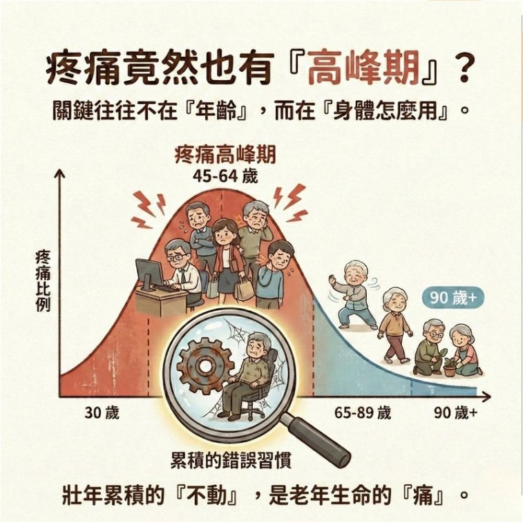
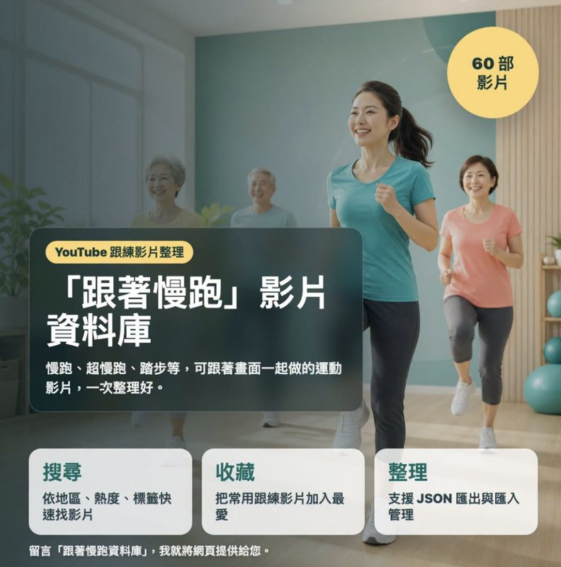

台灣捷邁 企業健康講座 · 實體同步線上從長照 3.0 資源佈局
到失智症管理
給正在、或即將照顧爸媽的你：60 分鐘，拿到一張找資源的地圖，和一套在家就能做的照護方法。
試算、檢測、資源電話都能在手機上點開，也歡迎分享給家人。
mattsue1003.github.io/ltc3-dementia-care-talk
鍵盤 ←→ 換頁 · O 目錄 · F 全螢幕左右滑動換頁 · 點下方標題看目錄

鍾孟修 職能治療師
- 愛迪樂有限公司 執行長
- 愛迪樂居家職能治療所 所長
- 社團法人台灣生活復能健康促進協會 副理事長
- 中華高齡專業照護訓練協會 理事
每天都有教案、專業文章分享，留言即可取得！
今天的 60 分鐘
開場：照護是一場馬拉松
家庭面臨的照護成本與挑戰 10–25 min長照 3.0 戰略地圖
居家、社區、住宿資源的最佳組合 25–50 min失智症、失能的「生活化」解法
辨識徵兆、藥物與非藥物介入、輔具與居家環境 50–60 minQ&A 實務諮詢
帶著你家的狀況來問色塊寬度等於時間長度。點任一段可直接跳過去。
照護是一場馬拉松，
不是百米衝刺
衝太快的人最先倒下。先看清楚賽道有多長，再決定怎麼配速。
臺灣超過 100 歲的長輩，有幾位？
2026 年百歲人瑞，首度突破 6 千人
比去年多 740 人，一年增加 13%。女性人瑞遠多於男性（2025 年女 3,412、男 2,337 位）。
臺北市：人口只有新北市的六成，人瑞卻最多
- 平均壽命全國最高：83.98 歲，比全國多 2.7 歲。
- 老得最快：65 歲以上占 24.18%，是全國最高齡的縣市。
- 醫療資源密集：醫學中心、診所與長照服務最近、最多。
- 社經條件：教育與收入較高，健康識能、營養和就醫習慣較好。
資料：衛福部社會及家庭署重陽節統計、內政部 114 年簡易生命表。
臺灣最長壽的長輩，幾歲？
最高齡女性 · 住臺北市
衛福部 2025 年重陽統計，創歷年紀錄。
最高齡男性
男女最高齡差了 7 歲，跟平均壽命的差距差不多。
追平世界紀錄
金氏世界紀錄最長壽者是法國的 Jeanne Calment，活到 122 歲。臺灣早年戶籍資料不完整，內政部表示部分人瑞的年齡無法查證。
臺灣目前的平均壽命是幾歲？
全體平均
比前一年多 0.50 歲，回到疫情前的水準。
男性
選 A 的朋友，你選到的是男性。
女性
女性比男性多活 6.8 年。
資料：內政部 114 年簡易生命表（2026 年 8 月公布）。最高臺北市 83.98 歲，最低臺東縣 76.49 歲，相差 7.5 歲。
十年來，男女差距一直都在 6.5 年以上
橫軸為民國年，縱軸為平均壽命（歲）。資料：內政部歷年簡易生命表。111 年受 COVID-19 影響，三條線同時下滑。
男性少活 6.8 年，全世界都一樣
全球幾乎每個國家都是女性比較長壽，世界平均差距約 5 年。臺灣的差距比全球更大。
生物因素：約占一小部分
- 雌激素保護血管，女性心血管疾病發生得較晚
- 女性有兩條 X 染色體，基因缺陷有「備份」
- 女性免疫反應通常較強
行為因素：差距的大部分
- 菸、酒、檳榔：男性口腔癌、肺癌、肝病明顯較多
- 不愛看醫生：症狀撐著、慢性病不規律回診
- 事故與職業風險：交通、工安意外以男性為主
- 壓力不說出口：較少求助，社會支持網較小
好消息是：後天因素都改得了。戒菸、定期健檢、規律運動，是男性最划算的長壽投資。
臺灣在世界排第幾？長壽國家做對了什麼？
在 OECD 38 國中排第 28 名
OECD 是「經濟合作暨發展組織」，由日本、南韓、美國、歐洲各國等 38 個已開發國家組成，常被當作國際比較的標準。衛福部以 2022 年資料比較，臺灣 79.8 歲，低於 OECD 中位數 81.4 歲。內政部也指出，臺灣低於日本、新加坡、南韓，高於中國、馬來西亞、印尼。
長壽前段班：女性以日本、南韓、新加坡、西班牙、瑞士領先；男性以瑞士、瑞典、澳洲、日本、挪威領先。
日本和食、地中海飲食：魚、豆類、蔬菜多，紅肉與加工食品少，份量小。
走路是生活的一部分：大眾運輸與步行城市，每天自然累積活動量。
預防勝於治療：國家篩檢、控制血壓血糖，把慢性病擋在前面。
老了也有角色：持續工作、當志工、參加社區活動，社交不中斷。
各國資料年份與計算方式不同，國際比較僅供參考。
影響長者健康最大的 10 個因素
GBD 2021 全球疾病負擔研究（《刺胳針》The Lancet，2024）：204 國、88 項危險因子中，70 歲以上健康生命年損失最多的前 10 名。長壽國家，正是把這些控制得最好的國家。
做到五件事，男性平均多活 12.2 年
哈佛大學追蹤約 12 萬人、長達 30 年以上（Circulation，2018）：50 歲時五項都做到的人，比一項都沒做到的人，男性多活 12.2 年、女性多活 14 年。
不吸菸
體重正常
BMI 18.5–24.9
每天運動 30 分鐘
中等以上強度
飲食健康
蔬果、全穀、魚
少量飲酒
不喝更好，喝也要少
這五項正好對應前一頁的高血壓、高血糖、吸菸、肥胖、膽固醇。
臺灣人一生中「不健康」的時間，平均有幾年？
為什麼不是前面的 81.27 歲？健康平均餘命要結合健康調查資料計算，公布得比較晚，目前最新的官方數字是 2022 年（民國 111 年）。兩個數字要用同一年相減，所以這裡用 2022 年的平均壽命 79.84 歲，當年正好受疫情影響偏低（見前面趨勢圖）。衛福部 2025 年表示不健康餘命仍「近 8 年」；政府目標是 8 年內把不健康年數占比從 10% 降到 8%。
「臺灣臥床 7 年，北歐臥床 7 天」？
不健康 = 躺在床上
把「不健康餘命」直接說成「臥床」，是錯的。這 7–8 年包含所有帶著慢性病、失能或失智生活的時間，大多數人其實還能下床、出門、自理一部分生活。
不鼓勵臥床，積極提升離床率
- 躺一週，肌力可能掉 10% 以上，越躺越起不來
- 機構與居家都以「每天離床、坐到餐桌吃飯」為目標
- 減少約束，用輔具、扶手讓長輩安全地動
不健康的年數不一定能消失，但「臥床」可以避免。這就是復能與生活化照護的價值。
其實，歐美的不健康餘命比臺灣更長
澳洲、紐西蘭、英國、挪威也是差距最大的國家之一（Mayo Clinic 研究，JAMA Network Open 2024）。各國計算方法不同，數字僅供對照。
「北歐 7 天」不是統計數字
沒有任何官方統計算過「北歐臥床天數」。這個說法來自日本醫師夫婦宮本顯二、宮本禮子到瑞典等國參訪後的觀察（日文原書《歐美沒有臥床老人》，中文版《不在病床上說再見》）。這是觀察和倡議，不是統計；在臺灣被拿來和「不健康餘命 7–8 年」對照，才變成「7 年對 7 天」。實際上，挪威、瑞典的不健康餘命約 11–12 年（WHO 2021），並不比臺灣短。
失能、失智了，生活品質仍然被重視
失智長輩仍被鼓勵出門、做家事、決定自己的生活；每天離床、用輔具自己動。到了生命末期，吃不下就不插鼻胃管、不勉強延長，尊重自然善終。所以「長期臥床」的時間很短，是照護方式的結果，不是因為他們比較不會生病。
健康平均餘命：活得「健康」的年數
正式名稱是健康平均餘命（Health-Adjusted Life Expectancy，HALE），常簡稱「健康餘命」或「健康壽命」。它扣掉生病、失能的時間，只算健康生活的年數。
臺灣全體
衛福部 2022 年資料
男性
男性的健康年數也比女性少 5 年
女性
活得久，不健康的年數也較長
挪威同為 71.2 歲並列第 5。臺灣為衛福部同年（2021）數字。
八個數字，看懂這場賽道
超高齡社會
2025 年起，每 5 人就有 1 位 65 歲以上長者。
一生的長照需求
國人一生中平均需要被照顧的時間。
失智盛行率 7.99%
65 歲以上約每 12 位有 1 位（2023 全國調查）。
每年因照顧離職
許多人在職涯高峰期離開職場。
全國失能人口
2026 年推估 92.3 萬人，2035 年將達 129.6 萬。65 歲以上約每 6 位就有 1 位失能。
衰弱＋衰弱前期
65 歲以上 4.1% 已衰弱、19% 在衰弱前期（衛福部 2022）。衰弱可以逆轉。
身心障礙者
約 120 萬人，每 20 人有 1 位；其中 45% 是 65 歲以上。
長照服務使用人數
2024 年使用長照的人數，涵蓋率 84.9%；使用者中近一半具身障資格。
對企業而言，這是人才留任問題；對個人而言，這是家庭財務問題。及早規劃，兩邊都能少損失。
單腳坐到站：你的腿，撐得住未來嗎？
- 坐在約 40 公分高、不會滑動的椅子前半部，雙手交叉抱胸
- 抬起一隻腳離地，只用另一隻腳站起來
- 站直後維持 3 秒，不晃、不扶
- 換腳再做一次
安全第一：旁邊要有人或扶手；膝蓋痛、頭暈、平衡不好的人改用雙腳做，不要勉強。
此為篩檢，不是診斷。新加坡的挑戰為衛教活動，未附正式研究；做不到請加強肌力訓練，並找醫師或物理治療師評估。
同樣是照顧，每月成本差很多
數字為常見區間的示意，實際依失能程度、身分別、機構與地區而不同。重點是：先用足政府資源，再決定自費的部分。
把照顧當成一個專案來管理
很多兒子、先生習慣「自己扛」，等到撐不住才求救。換個角度：你是這個專案的 PM，不是唯一的工程師。
現況與需求
爸媽哪些事自己能做？哪些要幫忙？白天誰在家？
家族會議
出錢、出力、陪診、決策各由誰負責，寫下來。
交給專業
洗澡、復健、交通、喘息，政府都有服務可以接手。
長期財務
以 7 年以上來估算，保留自己的生活與退休金。
有長照 3.0，還需要長照險、失能險嗎？
- 居家服務、日照、復能、喘息、交通、輔具，有額度、有部分負擔
- 住宿機構補助 2026 年起最高 18 萬元／年
- 不給現金：不付外籍看護薪水、不補家人請假或離職的收入
以前面的每月成本 × 平均長照需求 7.3 年粗估。
| 長照險 | 失能險 | |
|---|---|---|
| 理賠條件 | 日常生活功能（如洗澡、穿衣、移位）有 3 項以上需要協助，或認知功能障礙（失智） | 符合保單「失能程度表」的等級（共 11 級） |
| 常見限制 | 多有約 90 天免責期，需醫師診斷與持續評估 | 依等級給付，輕度失能可能只領一次 |
先做這三步：① 查公司團保與自己現有保單是否已含失能或長照保障 ② 用上面的方式估出自家缺口 ③ 比較「保費 × 繳費年期」和自己存一筆照顧準備金。
本頁為一般性說明，不構成保險或財務建議；是否投保請依個人狀況洽詢專業顧問，並詳讀條款。越年輕投保保費越低，已有病史可能被拒保或除外。
長照 3.0 資源導航：
讓政府成為你的神隊友
知道有哪些資源、從哪個入口進去、怎麼組合，比知道所有法規條文更重要。
長照 2.0 與 3.0，差在哪裡？
| 面向 | 長照 2.0（2017–） | 長照 3.0（2026 起推動） |
|---|---|---|
| 核心目標 | 把服務「建起來」：社區據點、四包錢、居家服務量能 | 把服務「串起來」：醫療、照顧、預防一條龍 |
| 醫療銜接 | 出院後再申請，常有空窗期 | 強化出院準備與居家醫療，住院中就銜接長照 |
| 預防 | 以失能後提供服務為主 | 往前移：衰弱、失智前期就介入；強化復能，讓長照變短照 |
| 家庭照顧者 | 喘息服務為主 | 擴大喘息與夜間服務、外看家庭短期替代照顧，支持在職照顧者 |
| 住宿與科技 | 住宿機構補助逐步提高（6 萬 → 12 萬） | 住宿補助最高 18 萬／年；智慧科技輔具全租賃、服務資料串聯 |
3.0 各項給付細則以衛福部及各縣市公告為準；本講座金額依現行給付標準說明。
復能讓長照變短照，出院前就把服務排好
目標：讓長照變短照
長照的專業服務已內建復能：治療師到府，短時間、密集地指導長輩重新學會自己吃飯、如廁、走路，也教家屬照顧技巧。不是一直幫他做，而是讓他再做得到。
2024 年有 8.5 萬人使用。剛出院、體力下降時是黃金期，建議優先申請。
- 在醫院就評估：出院前約 3 天，醫院出院準備團隊做長照等級評估
- 返家 7 天內取得服務；3.0 目標是出院前擬好一週照顧計畫，出院當天就媒合
- 找誰？住院時主動告訴病房護理師或醫院「出院準備服務」個管師、社工，越早提出越好
喘息有幾天？外看家庭、在職者怎麼辦？
以機構住宿式喘息計，約 14 天／21 天；也可拆成居家喘息（按小時）、日照或小規機、巷弄站使用。
夜間：小規模多機能提供夜間臨時住宿；個管員可連結晚間及夜間緊急服務；夜間與例假日服務另有加計。
不是一般喘息，是兩個專案
- 擴大喘息：外看休假或請假，長照 2–8 級就能申請，不必等 30 天空窗
- 短期替代照顧（2023 年起）：外看休假期間由機構或居家替代照顧
兩者合計每年最多約 52 天。外看逃跑、轉換雇主、返國請假期間，出示證明可視同未聘外看，申請照顧服務。
- 家庭照顧假每年 7 天；可與公司協商彈性上下班、減少工時、遠距工作
- 勞動部推動「友善家庭照顧標章」，認證提供托老津貼的企業
- 經濟部 2026 年起，企業設托老服務或員工托老補貼可在補助計畫加分
喘息天數為以機構住宿式喘息每日約 2,310 元換算的概估，實際依服務組合與核定為準。
住宿補助提高多少？智慧科技包含什麼？
- 2026 年起每月最高 1.5 萬元、每年最高 18 萬元，追溯自 1 月 1 日
- 對象：長照等級 4 級以上，或中度以上身障；2023 年起已取消排富
- 改為按月認列：當月住滿一半天數就算一個月
- 身障住宿照顧費補助每月另加 5,000 元
- 智慧輔具全租賃（2026/7/1 起）：移動、移位、沐浴排泄、居家照顧床、安全看視 5 大類，3 年 6 萬元
- 安全看視：離床、跌倒等偵測，支援夜間緊急應變
- 日照中心導入科技輔具（2024–2027 年計畫）
- 住宿機構：智慧照顧科技列入品質獎勵指標
- 服務資料串聯：開放資料介面，讓家屬用手機 App 隨時查長照服務使用情形
資料來源：衛福部《長期照顧十年計畫 3.0（115–124 年）核定本》、衛福部 2026 年住宿補助公告。
記住一支電話就夠了
長照專線，前 5 分鐘免費。家人住院中，也可以直接找醫院的出院準備服務，出院前就評估好。
撥打 1966
說明長輩狀況與住址
照管專員到府
評估失能等級 CMS 1–8，2 級以上可使用給付
個管師擬計畫
依需求組合服務，可以提出你的想法
服務開始
狀況改變可申請重新評估
你家可以用多少？
交通接送以臺北市（第 1 類）計算；聘有外籍看護的家庭，照顧及專業服務以專業服務為主。實際以照管中心核定為準。
申請輔具和無障礙改善，家屬最常問的三件事
要，先評估、再購買
先打 1966 取得長照等級（2 級以上）。輪椅、移位機、電動床、居家無障礙工程等多數品項，還要由輔具評估人員到府出具評估報告。
自己先買再來申請，通常不能補助。
找特約廠商，只付自付額
拿核定公文到長照特約的輔具或無障礙廠商，你只付「部分負擔＋超出給付上限的差額」，其餘由廠商向縣市政府請款。
核定後通常有期限（例如 6 個月）內要完成購買或施工。
看身分，也看品項上限
一般戶補助 70%、中低收入戶 90%、低收入戶 100%。但比例是乘在每個品項的給付上限，不是乘在實際價格。
撥 1966
照管專員評估長照等級
輔具評估
評估人員到府，開評估報告
核定品項與金額
選第 1 組或第 2 組額度
特約廠商購買／施工
付自付額，廠商請款
各縣市作業細節略有不同（少數情況需先付款再核銷），以當地照管中心公告為準。
為什麼無障礙工程常常自己付比較多？
你付 ＝ 實際價格 − 政府補助
輔具和無障礙共用 3 年 4 萬元：先扣掉已買輔具，剩下的才是這次工程能用的額度。
預設為示意：浴室改造報價 12 萬元，扶手、防滑、斜坡道、門改拉門等可給付項目上限加總約 2.6 萬元。
科技輔具補助 6 萬元，真的比較划算嗎？
| 3 年額度 | 第 1 組：傳統輔具 | 第 2 組：智慧科技輔具 |
|---|---|---|
| 總額度 | 4 萬元 | 6 萬元 |
| 居家無障礙 | 與輔具共用 4 萬 | 最多 2 萬元 |
| 取得方式 | 購買或租賃 | 全租賃，需求變了可以換 |
| 品項 | 輪椅、便盆椅、扶手、斜坡等，選擇多 | 移動、移位、沐浴排泄、照顧床、安全看視 5 大類；首批 17 件 |
| 規則 | 兩組二擇一，選定後 3 年內不能更換；需輔具評估人員出具報告 | |
需要高價設備（智慧照顧床、移位設備、離床或跌倒看視），照顧者白天要上班，且家裡不需要大型無障礙工程。
租金每月持續扣額度，3 年 6 萬平均每月約 1,667 元；無障礙只剩 2 萬；品項還少；長輩與家屬要花時間學操作。需要浴室改造、大量傳統輔具的家庭，第 1 組可能更實用。
失智防走失：定位鞋墊也能用長照租
- AI 智慧定位鞋墊列入 2026 年 7 月首批 17 件智慧科技輔具，屬「安全看視類」（EI05）
- 走第 2 組額度（3 年 6 萬元），只能租賃；租金由特約廠商訂定、報縣市備查，廠商負責維修、清消與回收
- 穿在鞋裡不易被拿掉；家屬用手機看即時位置，走出設定範圍就通知
- 失智症者經評估長照 2 級以上即可申請；已有縣市與廠商簽約（如苗栗縣）
目前查不到政府規定「租金累計超過成本就能買斷」。這屬於特約廠商與家屬之間的租約條件，簽約前請直接問：
- 每月租金多少？租多久後可買斷、買斷價多少？
- 買斷後還有沒有維修、門號或平台月費？
算算看：鞋墊建議售價約 3,960 元。若只需要這一項，自費購買可能比改選第 2 組更划算，傳統輔具的 4 萬元額度還能留給輪椅、扶手。
也可同時申請各縣市免費的失智「愛心手鍊」與指紋建檔。資料來源：衛福部首批智慧輔具公告、縣市新聞稿；品項與價格以 1966 及特約廠商為準。
有身障證明，又有長照資格？兩邊資源可以搭配
| 項目 | 身心障礙福利 | 長照 3.0 |
|---|---|---|
| 資格 | 領有身心障礙證明，不限年齡 | 長照等級 2–8 級（65 歲以上、50 歲以上失智、失能身障者等） |
| 窗口 | 社會局、輔具資源中心 | 1966、長期照顧管理中心 |
| 輔具補助 | 每個品項有自己的上限；低收 100%、中低收 75%、一般戶 50% | 3 年總額 4 萬（或第 2 組 6 萬）；低收 100%、中低收 90%、一般戶 70% |
| 照顧服務 | 個人助理、身障日間照顧、臨時及短期照顧 | 居家服務、日照、居家復能、喘息 |
| 交通 | 復康巴士 | 長照交通接送 |
| 經濟支持 | 生活補助、稅捐減免、停車位識別證、愛心卡 | 住宿機構補助（2026 年起最高 18 萬／年，長照 4 級以上或中度以上身障） |
不知道要買什麼輔具？先查輔具資料庫

109 項輔具，依功能與食、衣、住、行、樂分類查詢，看用途、適合誰；再到補助查詢頁，看長照與身障可以補多少。
居家、社區、機構的組合戰術
長輩在自己家
- 居家服務：沐浴、備餐、陪同
- 居家復能：治療師到府教功能訓練
- 居家護理、居家醫療
白天出門，晚上回家
- 日間照顧中心、小規模多機能
- 家庭托顧
- 巷弄長照站、失智據點
需要 24 小時照顧
- 長照住宿機構、護理之家
- 失智團體家屋
- 住宿補助 2026 年起最高 18 萬元/年（每月 1.5 萬）
在職照顧者的工具箱
家庭照顧假 7 天
條件：家人（含孩子、父母、配偶等家屬）要打預防針、生重病或發生重大事故，需要你親自照顧。
每年 7 天，併入事假（通常不給薪）；雇主不得拒絕，也不得因此扣全勤、影響考績。必要時公司可要求證明，如診斷書或就醫、接種紀錄。
先跟主管談
陪診、評估日、出院日先排好，比臨時請假更好協調。
不是只有你
家庭照顧者關懷專線、照顧者支持據點，提供諮詢與課程。
長照 3.0 ＋ 喘息
白天交給居家服務或日照；喘息每年約 14–21 天，外看家庭最多約 52 天；住院有住院整合照護，不必請假陪病。
建議做法：把「照顧日曆」和工作行事曆放在一起，提早 2 週標出回診、評估與喘息日期。
失智症、失能的
「生活化」照護法
最好的復健，藏在每天的生活裡。先學會看懂警訊，再學會怎麼陪。
大腦的求救信號
想著家中長輩，點選最近半年出現的狀況：
近一半的失智（45%），可以預防或延後

一生中 14 個可改變的危險因子，依「如果完全消除，可減少多少失智」排序。點任一項看生活中怎麼做。
預防失智，從好玩開始：兩個免費小工具
對應前一頁的「社交孤立」與「認知刺激」：陪爸媽聊旅行、聊美食、一起猜歌，就是在練腦。
心臟血管：99% 早就有警訊

心肌梗塞、心臟衰竭、中風，幾乎都不是突然發生。追蹤 930 萬人的研究發現，發病前 99% 以上的人早就有至少一項警訊：血壓、膽固醇、血糖、吸菸。「正常」不等於「理想」。
來源：《美國心臟病學會期刊》2025。高血壓、膽固醇、糖尿病、吸菸，也是失智的危險因子。
自我檢查：四個警訊，你有幾項？
不知道自己的數字？下次健檢，先把數字記下來。
理想值參考美國心臟協會標準。臺灣 2022 年高血壓指引已把標準定在 130/80，不要等到 140/90 才注意。是否需要處理，請與醫師討論。
健康八要素，你做到幾項？
身體的求救信號：衰弱
衰弱五徵兆
- 一年內體重沒刻意減卻掉了 3 公斤以上
- 常覺得累、提不起勁
- 握力變差：轉瓶蓋、提東西吃力
- 走路變慢，過馬路來不及
- 活動量明顯變少，常坐著
1–2 項是衰弱前期，3 項以上是衰弱。衰弱是可以逆轉的。
現場試試：椅子坐站 5 次
雙手交叉胸前，從椅子站起、坐下，連續 5 次。超過 14 秒建議做進一步評估。
請扶著牢固的椅子，頭暈或疼痛就停。
肌力下降和跌倒常是失能的起點。髖部骨折後，很多長輩就此無法回到原本的生活。
救肌肉，第一名是「漸進式肌力訓練」
國際衰弱與肌少症研究學會（ICFSR）臨床指引、亞洲肌少症工作小組（AWGS 2019）的共同結論，依證據強度排序：
有慢性病、骨鬆或關節手術病史者，開始前先請醫師或物理治療師評估。
提重物走路、蹲下站起：最生活化的肌力訓練
兩手提重物，走直線
兩手各提一個水壺或購物袋，抬頭挺胸走 20–30 公尺，休息後再走，共 3 趟。從每手 1–2 公斤開始，慢慢加重。
練到：握力、肩背、核心與走路穩定度。大型跨國研究（PURE，《刺胳針》2015）發現，握力每少 5 公斤，死亡風險增加 16%。
從「椅子蹲」開始
站在椅子前，屁股往後坐、輕碰椅面再站起，膝蓋對準腳尖；10 下 × 2–3 組。能力好再降低椅子或拿水壺加重。
練到：大腿與臀部，這是起身、上下樓梯、從馬桶站起來最需要的肌肉。
能蹲到底、從地上站起來
扶著穩固的桌子慢慢蹲到底，停 10 秒再站起；進階是不扶東西，從地板坐下再站起。
為什麼重要：研究發現「從地板坐下再站起」的能力與壽命有關，分數越高，死亡風險越低。跌倒後能自己爬起來，也是防失能的關鍵。
注意：膝關節退化、疼痛，或做過人工膝關節置換的人，先不要做全蹲，深度請依醫師或物理治療師建議；全程呼吸不憋氣，旁邊要有扶持。
長者量六力：提早發現衰弱，積極預防
WHO 推出的 ICOPE 整合照護，國健署稱為「長者量六力」。65 歲以上（原住民 55 歲以上）每年檢測一次，一項異常就進一步評估與介入。陪爸媽一起答答看：
藥物介入：家屬要知道的事
乙醯膽鹼酶抑制劑
Donepezil、Rivastigmine（有貼片）、Galantamine。輕中度常用，健保依評估分數給付。
留意：腸胃不適、心跳變慢、頭暈。
NMDA 受體拮抗劑
Memantine，可單用或合併使用。
留意：頭暈、嗜睡、便秘。
抗類澱粉蛋白抗體
適用早期患者，需做檢查確認、定期 MRI 追蹤，目前多為自費。
是否適合要和神經科醫師詳談。
家屬的三件工作
一週藥盒分裝 · 記錄睡眠、食慾和情緒變化 · 回診時帶紀錄給醫師看
運動，是預防失智和失能最有效的方法
世界衛生組織 2020 年身體活動指引（65 歲以上）：
有氧
中等強度（可以說話但無法唱歌）；或高強度 75–150 分鐘。拆成每天 20–40 分鐘。
肌力
練到全身大肌群，大腿、臀部最重要；中等以上強度，做到最後幾下會累。
平衡＋多元功能
把平衡和肌力結合成功能性動作（起身、跨步、轉身），重點在預防跌倒。
居家三動作
椅子坐站 10 下 × 2 組 · 扶椅踮腳尖 15 下 × 2 組 · 扶椅單腳站 左右各 10 秒 × 3 次。手可扶穩固的椅子，頭暈或疼痛就停。
對大腦最有效的，是「混合式」運動
多元運動效果最好
網絡統合分析（42 篇隨機試驗，2024）：有氧＋肌力＋平衡＋認知挑戰的多元運動，對整體認知與執行功能改善最多。
有氧＋肌力合併，優於單一運動
劑量反應網絡統合分析（68 篇研究、6,544 人）：每週約 336 MET-分鐘開始有效，934 MET-分鐘以上才有臨床上看得出的改善。
以中等強度約 4 MET 換算；依體能從少量開始，慢慢加。
快走、踏步、固定式腳踏車，陪著一起走最容易持續。
椅子坐站、彈力帶、提水瓶，每週 2–3 次。
邊踏步邊數數、邊走邊說水果名稱，同時練腦和腿；太難就降階，讓長輩做成功。
兩篇統合分析對「每週幾次最好」的結論不完全一致，以每週合計 150 分鐘以上為共同基準。
痠痛：為什麼 45–64 歲是疼痛高峰？

錯誤習慣的惡性循環
壯年累積的不動，是老年的痛，也是日後失能的起點。個別疼痛請找醫師或物理治療師評估。
痠痛：影響最大的五個關鍵因子
以研究證據強度與效應大小排序，這些因子與痠痛的關聯最明確。
來源：BMC Public Health 2025；代謝症候群與下背痛之孟德爾隨機化研究；睡眠與疼痛神經免疫回顧。
哪一種運動最能對抗痠痛？
沒有單一「神級運動」，有做、規律、對症才是關鍵。
來源：JOSPT 2022、Frontiers 2025 下背痛運動網絡統合分析；JOSPT 2023 頸痛；2018 美國身體活動指南。有疼痛者請先請物理治療師或醫師評估。
痠痛問題影片學習資料庫
46 種常見痠痛問題 × 專業物理治療師、醫師影片。搜尋、篩選，跟著學。
疼痛持續或加劇，請找醫師或物理治療師評估。
「跟著慢跑」影片資料庫

60 部跟練影片：慢跑、超慢跑、踏步，跟著畫面一起做。可搜尋、收藏、匯出整理。
從「能講話、不能唱歌」的強度開始，慢慢累積到每週 150 分鐘。
用 AI 看懂健檢報告
高血壓、膽固醇、血糖，都是失智和失能的危險因子。先看懂自己（和爸媽）的數字：
拿掉個資
姓名、身分證號碼、病歷號都不要貼
貼上數字
連同報告上的參考值一起給 AI
請它白話說明
標出哪些超過理想值
列出問題
整理看診時要問醫師的事
和醫師確認
處理方式由醫師判斷
慢性病與健檢問題影片學習資料庫
健檢紅字問題× 專業醫師／醫院頻道影片
把家事變成訓練
點卡片，看怎麼依長輩能力調整難度：
四個原則：保留角色（讓他還是一家之主）、簡化步驟、給選擇、讓他做成功。
傍晚五點，住了四十年的家裡，爸爸穿好外套站在門口說：
「我要回家。」
你會怎麼回應？
輔具與居家環境改造
浴室
- 馬桶旁、淋浴區扶手
- 止滑墊、洗澡椅
- 門檻移除
起身與夜間
- 床邊扶手、適當床高
- 感應式夜燈
- 床到廁所的動線淨空
客廳與走道
- 收起電線、小地墊
- 常用物放在腰到肩的高度
- 椅子要有扶手
看得懂的家
- 廁所門貼圖示
- 大字時鐘與日曆
- 危險物品收納上鎖
先評估、再購買：可請職能或物理治療師到府評估，或洽各縣市輔具資源中心試用，避免買錯。
需要幫忙時，打這幾支電話
另可洽：各縣市長期照顧管理中心、失智共同照護中心、輔具資源中心。
常見問題
爸媽不願意讓陌生人來家裡評估，怎麼辦？
用「政府的健康檢查」「醫師建議」來說明，比「你需要被照顧」更容易被接受。可以請長輩信任的親友或醫師幫忙開口，評估當天家屬陪同。
家裡已經請外籍看護，還能用長照服務嗎？
可以。專業服務（如居家復能）、交通接送、輔具與居家無障礙補助、喘息服務都能申請，看護休假時正好用喘息銜接。
家人住院中，出院後怎麼不要有空窗期？
住院期間就詢問醫院的出院準備服務，請他們協助轉介長照評估，出院前把居家服務或復能排好。
我住臺北，爸媽住南部，可以怎麼照顧？
以長輩戶籍或居住地申請，由當地照管中心評估。你可以擔任主要聯絡人，搭配定期視訊、藥盒與安全裝置，返鄉時參加照顧計畫討論。
怎麼知道該換成機構照顧了？
當照顧者的身心健康已經被拖垮、長輩需要 24 小時看視、或夜間頻繁照顧讓全家睡不好時，就是重新評估的時機。選擇機構不是放棄，是換一種照顧方式。
今天帶走三件事
有狀況，先打 1966
住院中就找出院準備服務，別等到出院才開始。
每週 150 分鐘，生活就是復健
讓長輩繼續做他能做的事，比全部幫他做更好。
照顧是團隊戰
你是 PM，不是唯一的工程師。照顧好自己，才跑得完全程。
謝謝台灣捷邁的邀請，也謝謝每一位同仁。照顧好家人之前，先照顧好自己。